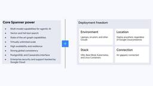
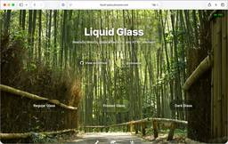
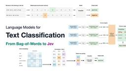
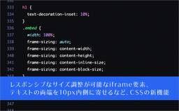

直近1週間の人気フィード
はてなブックマーク数を元に新着優先で並べ替え

Coding Agents Love Decision Records 18 Radar
18 Radar
The following article originally appeared on Duncan Davidson’s blog and is being republished here with the author’s permission. Decision records give coding agents durable project context—as long as they don’t turn every decision into a courtroom transcript. Architectural Decision Records (ADRs) help human teams establish rules and carry context forward in software projects. They capture […]
1日前

Google Cloud、ローカルマシンにインストールできる大規模分散型マルチモデルDB「Spanner Omni」正式版リリースを発表 17 Publickey
Publickey
Google Cloudは、大規模分散データベースとしてリレーショナルモデルだけでなくグラフ型やキーバリュー型、ベクトル検索、テキスト検索などのマルチモデルに対応したデータベースソフトウェア「Spanner Omni」の正式版リリースを発表...
2日前

JavaScriptの統合ツールチェーン「Vite+ 1.0」正式リリース。ランタイム、パッケージマネージャー、ビルドツール、リンター、フォーマッターなどを統一 48 Publickey
JavaScript用ビルドツール「Vite」（ヴィットあるいはヴィート）を開発しているVoidZeroは、Viteを含むJavaScriptの統合ツールチェーン「Vite+」がバージョン1.0に到達したことを発表しました。 Vite+ 1...
3日前

Next.jsアプリをCloudflare WorkersやAWS LambdaなどVercel以外のサーバレス基盤へデプロイできる「Vinext 1.0」リリース 39 Publickey
Cloudflareは、代表的なWebアプリケーションフレームワークであるNext.jsを用いて開発したアプリケーションを、Cloudflare WorkersやAWS Lambda、NetlifyといったVercel以外のサーバレス基盤に...
3日前

長年の悩みがこれで解決！ CSSで機能を組み合わせたときにブラウザがサポートしているか検出できる新機能「@supports named-feature()」 14 コリス
コリス
CSSの@supportsはブラウザがその機能をサポートしているか検出するのに便利ですが、単独の機能しか検出ができません。 たとえば、gapは現在はflexboxでサポートされていますが、当初はCSS Gridのみでした […]
3日前
WindowsでLinuxコンテナの作成や実行を可能にする「WSL Containers」正式リリース。コマンドラインとAPIから利用可能 26 Publickey
マイクロソフトはWSL（Windows Subsystem for Linux）の新機能として、WindowsでLinuxコンテナの作成や実行を可能にする「WSL Containers」の正式リリースを発表しました（発表ブログ、アーキテクチ...
4日前
「Docker Cloud Sandboxes」発表、AIエージェント向けサンドボックスをローカルとクラウド間で自由に移動可能に 62 Publickey
Docker社はAIエージェント向けのサンドボックス環境をクラウド上で提供する「Docker Cloud Sandboxes」を発表しました。 同社はすでにローカルで動作するサンドボックス環境の「Docker Sandboxes」を今年（2...
6日前

ガラスの屈折やぼかしも美しい！ WebページのさまざまなUI要素をリキッドグラスにするエフェクトライブラリ -LiquidGlass 15 コリス
Webページのさまざまな要素（カードやボタンなど）をリアルなガラスにするエフェクトライブラリを紹介します。 リキッドグラスのエフェクトは非常に美しく、屈折、ばかし、色収差、ライティングなども設定でき、かなりリアルなガラス […]
4日前

アラート対応のAI自動化で考える、思考フローの再現とハーネスによる安全設計 49 ZOZO TECH BLOG
ZOZO TECH BLOG
はじめに こんにちは。データシステム部・MA推薦ブロックの伊藤（@rabbit_x86）です。私たちのチームでは、ユーザーに最適な配信を届けるために、LINE・Push通知・メールなどのマーケティングオートメーション（MA）に関する推薦システムを開発・運用しています。 本記事では、推薦システムの運用で発生するアラート対応をAIで自動化した取り組みを紹介します。人間の対応フローを「障害分析・対応の考案・敵対的レビュー・実行」の4つのタスクに分解してAIで再現し、対応にかかる工数とコンテキストスイッチを減らすことを狙います。本番環境で安全に動かすため、AIの権限と実行できる操作を段階的に絞り込むハ…
5日前
目にみえる作業を電子化しても使えるシステムにならないので業務やってる人がAI使ってシステム作っても使い物にならないがち 39 きしだのHatena
AIでだれでもちょっとしたプログラムを作れるようになっているので、業務をやってる人がシステム開発したけども全然使えない、みたいな話を聞くようになりました。 それで「業務をしっててもシステムは作れないのか」みたいな話が出ますが、システムを作れるほど「業務をしってる」という人はなかなかいなくて、多くは業務の作業を知っているだけです。 自分の担当外はよく知らなかったり、なぜその作業手順になってるか、それを変えるとどういう影響が出るかとかまでは、業務をまわしているだけではわかりにくいと思います。 業務全体のワークフローや状態遷移、データ構造をわかっているわけではないので、目に見える作業のUIを作って電…
7日前
ここ1,2年で大きく変わった！ デザインのワークフローにAIを活用したやり方がよく分かる解説書 -AIを味方にする デザインワークフロー実践ガイド 3 コリス
※本ページは、アフィリエイト広告を利用しています。 AIが当たり前になりつつある現在、デザインのワークフローも劇的な変化をし始めています。エディタをはじめ、AdobeやFigmaなどにもAIが採用され、意識せずにAIを使 […]
2日前

Web 標準動向 2026年9月版 9 Zennの「frontend」のフィード
Zennの「frontend」のフィード
こんにちは！ サイボウズ株式会社 デザインテクノロジストの saku (@sakupi01) です。 はじめにサイボウズは 2025 年 4 月より、W3C のメンバーに加入しました。https://blog.cybozu.io/entry/joining-w3c標準化プロセスに関わることができるようになるための最初の一歩として、フロントエンドエンジニアの一部のメンバーは積極的に Web 標準のキャッチアップを行っています。そこで、毎月メンバーが興味を持った Web 標準に関する話題や、実際に標準化プロセスに関わることができた場合にはその報告などを 1 つの記事としてまとめ、...
3日前
embeddingベースの推薦システムでA/Bテストを高速に回すための配信基盤REP 20 ZOZO TECH BLOG
はじめに こんにちは、データシステム部推薦研究ブロックの寺崎（@f6wbl6）です。 ZOZOTOWNでは、ユーザーと商品を同じベクトル空間で表現するembeddingをTwo-Towerモデルで学習しています。このembeddingを複数の推薦施策で共有できるEmbedding基盤を運用しており、過去のテックブログで紹介しました。 techblog.zozo.com このEmbedding基盤を活用することで、新しい推薦施策の立ち上げ時に新たなモデル構築やモデルのためのインフラ整備等をゼロから行う必要がなくなり、立ち上げ期間を大きく短縮できました。この基盤を使った汎用推薦システムの構築事例も…
5日前

コーディングエージェントにGoogle Cloudの専門知識とツールを組み込む「Google Cloud Developer Plugin for AI Coding Agents」発表 17 Publickey
Google Cloudは、Claude CodeなどのコーディングエージェントにGoogle Cloudの専門知識とツールなどを組み込める「Google Cloud Developer Plugin for AI Coding Agent...
4日前

AWS、AIエージェントを自作できるツール「Strandsハーネス」をオープンソースで公開。特定のLLMに依存せず入れ替え可能、任意のコンテナ環境にデプロイ 17 Publickey
Amazon Web Services（AWS）は、GPTやClaude、Gemini、Ollamaなど主要なLLMやLLMランタイムを基にした高性能なAIエージェントを簡単に自作できるツール「Strandsハーネス」をオープンソースで公開...
5日前

Language Models for Text Classification: From Bag-of-Words to Jev 10 Ahead of AI
A Visual Guide to RNNs, CNNs, Transformers, and Calibration, with Hands-On Experiments on Accuracy and Efficiency
4日前

Web制作者は要チェック！ iframeのレスポンシブなサイズ調整など、Chrome 154で新しく追加された7つのCSSの機能 7 コリス
先週アップデートされたChrome 154に追加された、CSSとUIに関する新しい機能を紹介します。 今回のアップデートで注目すべきは、iframeがレスポンシブなサイズ調整が可能になり、text-decoration- […]
5日前
無課金ゲーム作りならClaudeがChatGPTに完全勝利 4 きしだのHatena
AstraがすごいとかOpusがすごいとか、一発プロンプトで作られたっぽい市販ゲームのような動画が流れるようになったけど、無課金だとどうだろうって試してたところ、Claude Sonnet 5.5が出てたので、試したらChatGPTに対して完全勝利でした。 プロンプト プロンプトはこれです。 3dスキーゲームを作りたい。 間を通り抜ければ点になるゲートと、ぶつかると後ろに跳ね返って減点になる木が下から上にスクロールする中をスキーヤーが滑り降りる。ゲートの端も減点。 ゲートをとおったときと木にあたったときにエフェクトがあるとうれしい。 左右に動くときにちょっと慣性がついてほしい。 ある程度すべり…
5日前
マイクロソフト、企業内アプリの実行基盤「Copilot Managed Runtime」プレビュー公開。Microsoft 365と同じテナント内でコード実行、管理者による集中管理も 6 Publickey
マイクロソフトは、AIコーディングエージェントのMicrosoft Copilotなどで開発した社内アプリケーションを実行するためのセキュアな基盤「Copilot Managed Runtime」をパブリックプレビューとして公開しました。 ...
6日前

増え続けるGoのテストに対応するGitHub Actionsのテストシャーディングと高速化 3 ZOZO TECH BLOG
はじめに こんにちは、ECプラットフォーム部の権守です。普段はZOZOTOWNの会員基盤の開発に携わっています。 会員基盤では機能追加やリプレイスを継続しており、それに伴ってテストコードも増え続けています。テストが増えること自体は品質を維持する上で必要ですが、GitHub Actions上のテストにかかる時間も徐々に長くなっていました。具体的には、ワークフロー開始から完了までの実経過時間（以下、wall-clock）は13分前後となることが多い状態でした。 そこで、wall-clockを短縮するとともに、今後のテスト数の増加にも対応できるよう、テストのシャーディングを中心に実行方式を見直しまし…
4日前